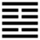

Sơn Hỏa Bí (賁 bì)
Đám đông, hợp lại với nhau thì phải có trật tự, uy nghi, có văn vẻ, cho nên tiếp theo quẻ Phệ Hạp là quẻ Búi là văn vẻ, rực rỡ, sáng sủa trang sức.
Thoán từ:
賁: 亨, 小利, 有攸往．
Bí: hanh, tiểu lợi, hữu du vãng.
Dịch: Trang sức văn vẻ thì hanh thông; làm việc gì mà chỉ nhờ ở trang sức thì lợi bé nhỏ mà thôi.
Giảng: Trên là núi, dưới là lửa; lửa chiếu sáng mọi vật ở trên núi, như vậy làm cho núi đẹp lên, trang sức cho núi.
Còn một cách giảng nữa: trong nội quái (vốn là quẻ đơn Càn) hào 2, âm, vốn ở quẻ đơn Khôn, thay vào hào 2 dương của quẻ đơn Càn, thành quẻ đơn Ly, như vậy là tô điểm cho quẻ đơn Càn. Trong ngoại quái (vốn là quẻ đơn Khôn) hào trên cùng vốn ở quẻ đơn Càn, lại thay hào trên cùng của quẻ đơn khôn, thành quẻ đơn Cấn.
Nói cách khác, vắn tắt mà không sai mấy thì nội quái có một hào âm trang sức cho hai hào dương, còn ngoại quái có một hào dương trang sức cho hai hào âm, vì vậy mà gọi là quẻ Bí: trang sức.
Vật gì cũng vậy: có chất, tinh thần; mà lại thêm văn, hình thức, thì tốt (hanh thông), nhưng nếu chỉ nhờ ở trang sức mà thành công thì lợi ít thôi.
Thoán truyện bàn rộng thêm: âm nhu và dương cương giao với nhau, thay đổi lẫn nhau (tức hào 2 và hào trên cùng như trên mới giảng). Ðó là cái văn vẻ tự nhiên (thiên văn) của trời; còn cái văn vẻ nhân tạo (nhân văn) thì nên hạn chế (quẻ Cấn ở trên có nghĩa là ngăn, hạn chế), vì tuy nó có công giáo hóa thiên hạ, nhưng nhiều quá thì văn thắng chất, xấu.
Đại tượng truyện còn khuyên: Việc chính trị nhỏ thì dùng trang sức được; còn việc quan trọng như phán đoán hình ngục thì đừng nên quả quyết, tô điểm thêm.
Ý nghĩa các hào :
1.
初九: 賁其趾, 舍車而徒．
Sơ cửu: Bí kì chỉ, xả xa nhi đồ.
Dịch: Hào 1, dương, Trang sức, trau giồi ngón chân (địa vị thấp) của mình; bỏ cách sung sướng là ngồi xe mà nên đi bộ (chịu khó nhọc).
Giảng: Hào này dương cương, ở cuối cùng nội quái Ly, tức như người có đức sáng suốt mà ở địa vị thấp nhất. Chỉ nên trau giồi phẩm hạnh của mình trong địa vị đó (ví như ngón chân, bộ phận thấp nhất trong thân thể), mà an bần, chịu đi bộ chứ đừng ngồi xe.
2.
六二: 賁其須．
Lục nhị: Bí kì tu.
Dịch: Hào 2, âm: trang sức bộ râu.
Giảng: Chữ tu ở đây nghĩa là râu, cũng như chữ tu : 鬚
Hào này làm chủ nội quái ly, có công dụng trang sức cho quẻ Ly, đặc biết là cho hào 3 dương ở trên nó, cho nên ví nó như bộ râu trang sức cho cái cằm (hào 3). Nó phải phụ vào hào 3 mà hành động. Hào 3 có tốt thì tác động của hào 2 mới tốt, cũng như phải có cài cằm đẹp thì để râu mới thêm đẹp, nếu cằm xấu thì để râu càng thêm khó coi. Nói rộng ra thì bản chất phải tốt, xứng với sự trang sức; chất và văn phải xứng nhau.
3.
九三: 賁如濡如, 永貞吉.
Cửu tam: Bí như, nhu như,vĩnh trinh cát.
Dịch: Hào 3, dương: Trang sức mà đằm thắm, hễ giữ vững chính đạo thì tốt.
Giảng: Hào này dương cương, đắc chính, lại ở trên cùng nội quái ly, có cái nghĩa rất văn minh; tượng trưng người có tài trang sức cho hai hào âm ở trên và dưới nó, tính rất đằm thắm với hai hào âm (có người dịch “nhu như” là trang sức một cách nhuần nhã, thấm nhuần). Vì vậy mà nên coi chừng, đừng say mê vì tư tình, mà phải bền giữ chính đạo thì mới tốt, không bị người xâm lấn (mạc chi lăng dã: Tiểu tượng truyện).
4.
六四: 賁如皤如, 白馬翰如, 匪寇, 婚媾．
Lục tứ: Bí như, bà (có người đọc là ba) như, bạch mã hàn như, phỉ khấu, hôn cấu.
Dịch: hào 4 âm: Muốn trang sức cho nhau (nhưng không được) nên chỉ thấy trắng toát. Hào 4 như cưỡi ngựa trắng mà chạy như bay (đuổi kịp hào 1), rốt cuộc cưới nhau được vì kẻ gián cách hai bên (hào 3) không phải kẻ cướp (người xấu).
Giảng: hào 4 âm nhu, ứng với hào 1 dương cương, cả hai đều đắc chính,tình ý hợp nhau, muốn trang sức cho nhau, nhưng bị hào 3 ở giữa ngăn cách, nên không trang sức cho nhau được, chỉ thấy trắng toát (trắng nghĩa là không có màu, không trang sức). Mặc dầu bị 3 cản trở, 4 vẫn cố đuổi theo 1, rốt cuộc 3 vốn cương chính, không phải là xấu, không muốn làm hại 4 và 1, cặp này kết hôn với nhau được.
5.
六五: 賁于丘園, 束帛戔戔, 吝, 終吉．
Lục ngũ: bí vu khâu viên, thúc bạch tiên tiên, lận, chung cát.
Dịch: Hào 5, âm: Trang sức ở gò vườn, mà dùng tấm lụa nhỏ, mỏng, tuy là bủn xỉn, đáng chê cười đấy, nhưng rốt cuộc được tốt lành.
Giảng: Hào 5, âm nhu, đắc trung, làm chủ quẻ Bí; vì là âm nhu nên có tính quá tằn tiện, lo trang sức cái gì hữu dụng như vườn tược thôi, mà lại chỉ dùng tấm lụa nhỏ, mỏng cho đỡ tốn, cho nên bị cười chê, nhưng như vậy còn hơn là xa hoa, mà biết trọng cái gốc là sự chất phác, cho nên cuối cùng vẫn được tốt lành, có hạnh phúc cho dân (hữu hỉ dã: lời Tiểu tượng truyện.)
6.
上九: 白賁, 无咎．
Thượng cửu: Bạch bí, vô cữu.
Dịch: Hào trên cùng, dương: lấy sự tố phác, như màu trắng (không màu mè gì cả) làm trang sức, không có lỗi.
Giảng: Hào này là thời cuối cùng của quẻ Bí, trang sức, màu mè đã cùng cực rồi; mà vật cực tắc phản, người ta lại trở lại sự chất phác, nên không có lỗi gì cả. Trong văn học sử, chúng ta thấy sau những thời duy mĩ quá mức, người ta lại “phục cổ”, trở lại lối văn bình dị, tự nhiên thời xưa.
*
Đại ý quẻ Bí này là có văn vẻ, có trang sức mới là văn minh, nhưng vẫn nên trọng chất hơn văn, lấy chất làm thể, lấy văn làm dụng, và không nên xa hoa, màu mè quá.